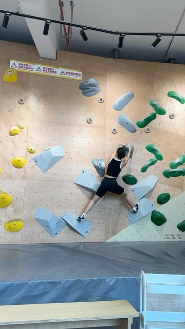
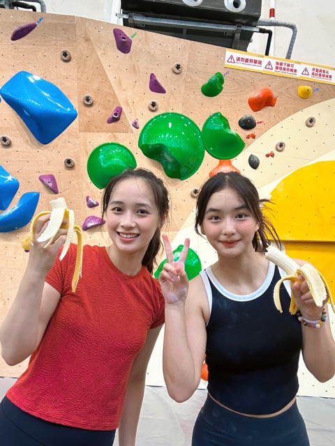

____ _ _ _
| __ ) ___ _ _| | __| | ___ _ __(_)_ __ __ _
| _ \ / _ \| | | | |/ _` |/ _ \ '__| | '_ \ / _` |
| |_) | (_) | |_| | | (_| | __/ | | | | | | (_| |
|____/ \___/ \__,_|_|\__,_|\___|_| |_|_| |_|\__, |
|___/
I never expected I would love rocking climbing before. However, when I first tried it, I was immediately captivated by the challenge and excitement it offered which is actually like a body puzzle game
And I met some amazing friends along the way who share the same passion.
I am still a beginner in this sport, and I am extremely careful to avoid any injuries since it is physically demanding.
But I am determined to improve my skills and take on new challenges.